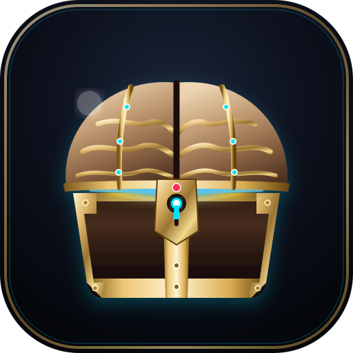

NeuroWare OS
v1.1
Cloud Ready
Expand View
NW STORAGE
9:41
NeuroWare
REGULAR
0
Install NeuroWare App
Add to Home Screen for fast offline access & shift alerts
📲 Install App
Continue in Browser
Modal Title
×